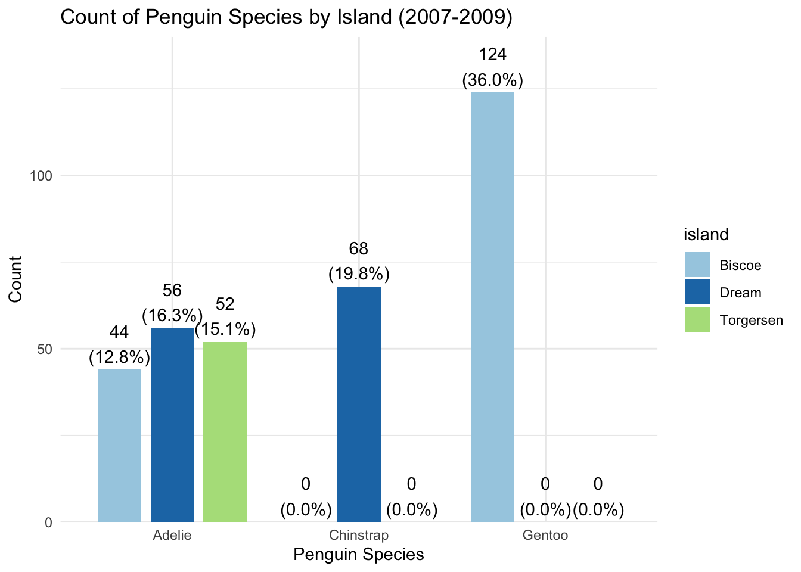

The R&E data style guide provides an overview of best practices for project/script setup and data visualization at CHC. It is meant to be a living document, with additions, updates, and changes being made as needed. If you have any questions about the topics listed in the style guide or have suggestions for other topics to include, please contact Kelsey Kyllonen.
Project and folder setup
A typical data project will have at least three components to set up in Box before starting:
An R project (.Rproj) file - sets the working directory for the project
The R project is typically already at the grant project level (i.e., in the 08. Research & Evaluation folder for the grant in Box) and will not need to be created for most projects
Generally, we have one .Rproj file per grant
A scripts folder - for storing script files, including any import, data management, and report scripts
A data folder - for storing data imports/exports from the script files
If your project will have one or more reports (.rmd or .qmd files) as a data product, you should also set up a reports folder to store these reports.
Qualtrics-specific setup
For projects that use Qualtrics to collect any type of survey data, you should create an import.r script file that imports the survey data directly from Qualtrics using an application programming interface (API), then exports the raw data to use in the data management script. There are multiple reasons for using this process:
It saves time - you don’t need to manually download a copy of the data from Qualtrics and modify the file to import correctly in R each time we get new survey responses.
It’s more secure - the data exported from the import file is a single .Rdata file, which, unlike Excel or CSV files, can only be opened through R. You can (and should) also remove any unnecessary identifying information from the survey data, such as names, email addresses, and IP addresses, and create any necessary blinded IDs before exporting. The exported data file will overwrite any previous copy of the data, which prevents accidentally using an old version.
A limited number of people on the R&E team have API access to Qualtrics, so having separate import and data management scripts allows people without this API access to work on/run the data management scripts.
For information on setting up Qualtrics API access, please see this document.
Script file types
Typically, you will use an R script file (.R) for import scripts and data management/cleaning scripts and either an Rmarkdown (.rmd) or Quarto (.qmd) script file for exploratory data analyses (EDAs) or data reports. Rmarkdown and Quarto scripts have similar base functionality, but Quarto is a newer and more robust platform with more data visualization and report setup options, especially for html reports.
The current practice on the CHC R&E team is to use Quarto for all new report script files, but leave existing Rmarkdown script files in .rmd format unless Quarto functionality is needed.
Script file setup
The contents of your R script file or Rmarkdown/Quarto file will look different depending on the needs of the project. However, all script files at CHC should start by loading the package libraries needed for the project, then importing the data set(s) to be cleaned/analyzed using relative file paths. In Rmarkdown/Quarto documents, this setup should be done in your first code chunk. See an example of a typical R&E team script setup and several different ways of importing data below:
Show the code
# Data wranglinglibrary(tidyverse) # ggplot2, forcats, dplyrlibrary(knitr) # for setting options in rmarkdownlibrary(here) # for setting file pathslibrary(readxl) # read excel files# visualizationslibrary(sjPlot) # Creates simple graphslibrary(kableExtra) # Makes tables look pretty# Import an .Rds data file from another folder ("Data and processing scripts") located one level above the current folderdata <-readRDS('Data and processing scripts/intern_survey_clean.Rds')# Import an .Rds data file from another folder ("Data and processing scripts") using the "here" package# This folder is one level above the current folder data <-readRDS(file=here("Data and processing scripts", "intern_survey_clean.Rds"))# Import an Excel file from a folder ("data") located one folder above the current foldersbs <-read_excel("data/Subcontractor List.xlsx", sheet=1)
Importing and exporting data
Importing data
Relative file paths
Whenever possible, the R&E team uses relative file paths (i.e., file paths that are not specific to one person’s computer) when importing data. Using relative file paths in script files means that anyone with access to the script file and data source could run the script without running into data import errors. These file paths rely on having a consistent working directory for the project by opening the script through the Rproject (.Rproj) file for the project. See an example of the same data import using relative and non-relative file paths in the code chunk below.
Show the code
# Relative file path (anyone could use)data <-readRDS('Data and processing scripts/intern_survey_clean.Rds') # The data is located in the "Data and processing scripts" folder# Non-relative file path (specific to Kelsey's computer)## DO NOT USE!!!!!data <-readRDS('C:/Users/kcollins17/Box/CHC All/10. Research, Evaluation & Professional Presentations/05. CHC Student Internship Evaluation Surveys/Data and processing scripts/intern_survey_clean.Rds')
Occasionally, the data you need to import is located in a folder outside the Rproject for the script. In cases like this, the easiest way to import the data is usually to set up a PATH_TO_BOX object with each user’s non-relative file path extension, then use the PATH_TO_BOX along with the relative file extension. See an example of this in the code chunk below.
Show the code
# set path to BoxPATH_TO_BOX <-"C:/Users/kcollins17/Box/"# Kelsey's path to Box# PATH_TO_BOX <- "C:/Box/" # any other paths are commented out until neededdata <-readRDS(paste0(PATH_TO_BOX, "CHC All/10. Research, Evaluation & Professional Presentations/05. CHC Student Internship Evaluation Surveys/Data and processing scripts/intern_survey_clean.rds"))
Exporting data
If the report from your .rmd or .qmd file will need to be run multiple times (e.g., monthly or quarterly), you should set up the report export to update with the current date and/or quarter or month to prevent previous reports from being overwritten. See examples of how to do this below:
Show the code
# Export a file labeled with the current datefilename_ <-paste0("Preliminary SOW table as of ",Sys.Date(),".xlsx")write_xlsx(x = prelim, path =paste0("data/sow_prelim/",filename_)) # Exported file will be labeled "Preliminary SOW table as of [current date]"# Export a file labeled with a current_quarter option## Set current quarterQUARTERS <-c("Q1", "Q2", "Q3", "Q4")current_quarter <- QUARTERS[2]## Export filesaveRDS(gcf_out, file =paste0("data/gcf/", current_quarter, "_gcf_data.Rds")) # Exported file will be labeled "Q2_gcf_data.Rds"
Connecting to Google Sheets
The googlesheets4 package lets you import and export data directly from Google Sheets using an API instead of manually downloading the data from Google Sheets.
To connect to the Google Sheet, first check the permissions on the Google Sheet to make sure that your email address is added as a user if needed, then import the sheet (see code below for an example). You will likely be asked to authenticate your email and/or API connection at this point; follow the command prompts from R in the console and browser window, and make sure to check the box to allow R to edit or delete your Google Sheets if asked. Once you’ve imported the Google Sheet, you can work with the data in R the same way as any other data set.
The gmailr and Microsoft365R packages can be used to send emails in bulk (up to ~500 at a time) through Gmail and Outlook, respectively. The R&E team typically uses the gmailr package to send gift card emails to survey participants through our research.for.chc Gmail account. We currently can’t use the Microsoft365R package to send emails through Outlook because of restrictions set up by ITSS.
Depending on the project needs, the bulk emails can be customized for each recipient using any field in the data set, including name, additional email addresses, and unique gift card codes. For an example of how to set up a script to send customized gift card emails, please see the gift_card_script_template.R file located in the Coding Resources folder in Box.
Note: the gmailr package requires a .json credential file to connect to the Gmail API. The same .json file can be used for multiple projects, and it should be placed in the same folder as the email script file. For an example of how to connect the .json file within an email script file, see the test_sending_emails.r script file in the Coding Resources folder in Box.
Formatting Code
In addition to improving overall readability, formatting your code in a consistent way helps others (and yourself!) interpret and troubleshoot your code more quickly. The R&E team uses some of the principles from the tidyverse style guide as a basis for formatting code; see below for a list of topics and links.
The level of detail you put into your graphs/tables will depend on who the graph/table is for. In general, you will be visualizing data for three audience types: yourself and/or the R&E team, internal (CHC) audiences, and external (professional) audiences. The tabs below describe the three audience types and show an example graph for each.
Graphs/tables for yourself and/or the R&E team can be “quick and dirty.” These graphs are for getting a quick look at the data and are meant for people who are familiar with data.
Show the code
plot_frq(pen$species)
These graphs and tables are meant to be used internally (within CHC) and for some outside funder reports. These graphs don’t have to be completely perfect, but they should be fairly polished and be understandable for people with some familiarity with the project/data/analysis. A good rule of thumb for these graphs is if they were to end up being published as-is without your knowledge, you wouldn’t be completely embarrassed to see them in print.
Show the code
plot_frq(pen$species, title ="Count of Penguins by Species") +xlab("Species") +theme_minimal()
Professional quality graphs and tables have the highest amount of detail and take the most amount of time to make. They should be able to be interpreted by people not familiar with the project/data/analysis without reading the rest of the report.
Show the code
plot_frq(pen$species, title ="Count of Penguins by Species") +labs(subtitle ="Includes penguins from Torgerson, Biscoe, and Dream islands") +xlab("Penguin Species") +ylab("Penguin Count") +theme_minimal()
Choosing Colors
Whenever possible, colors should either help your audience more easily interpret the graph or convey meaning in some way.
Tips for choosing colors:
Create your graph using the default colors first, then modify if needed
Use a colorblind-friendly palette – Check this page and this page to see how colors look under different types of colorblindness
Use contrasting colors (often called qualitative colors) for categorical variables since all variables carry the same weight – See this page for an example of contrasting/qualitative color palettes.
Only use a gradient for ordinal/continuous data when implying a numeric scale (e.g., likert)
The RColorBrewer package has many pre-set color palettes to choose from, including examples of sequential vs. divergent color scales. To see more examples of color palettes, including sequential vs. diverging color scales and colorblind-friendly palettes, check out the Color Brewer 2.0 site.
Best Practices
Significant Figures
When creating graphs and tables, R (and other stats programs) will often display two or more significant figures for each calculation. In most cases, this is unnecessary for understanding differences between the variables and will be more difficult for your audience to interpret. See an example of this in the Avg Body Mass column in the two tables below:
Show the code
nosigfig <- pen %>%select(species, sex, body_mass_g) %>%group_by(species, sex) %>%summarise(across(where(is.numeric),list(mean =~mean(.x, na.rm =TRUE), count =~sum(!is.na(.x))))) %>%relocate(species, sex, body_mass_g_count, body_mass_g_mean) %>%rename(Species = species, Sex = sex, Count = body_mass_g_count, "Avg Body Mass (g)"= body_mass_g_mean)nosigfig %>%kable(booktabs =TRUE, caption ="Mean Penguin Body Mass by Species and Sex") %>%kable_styling(latex_options =c("striped", "HOLD_position"))
Mean Penguin Body Mass by Species and Sex
Species
Sex
Count
Avg Body Mass (g)
Adelie
female
73
3368.836
Adelie
male
73
4043.493
Adelie
NA
5
3540.000
Chinstrap
female
34
3527.206
Chinstrap
male
34
3938.971
Gentoo
female
58
4679.741
Gentoo
male
61
5484.836
Gentoo
NA
4
4587.500
Show the code
sigfig <- pen %>%select(species, sex, body_mass_g) %>%group_by(species, sex) %>%summarise(across(where(is.numeric),list(mean =~round(mean(.x, na.rm =TRUE)), count =~sum(!is.na(.x))))) %>%relocate(species, sex, body_mass_g_count, body_mass_g_mean) %>%rename(Species = species, Sex = sex, Count = body_mass_g_count, "Avg Body Mass (g)"= body_mass_g_mean)sigfig %>%kable(booktabs =TRUE, caption ="Mean Penguin Body Mass by Species and Sex") %>%kable_styling(latex_options =c("striped", "HOLD_position"))
Mean Penguin Body Mass by Species and Sex
Species
Sex
Count
Avg Body Mass (g)
Adelie
female
73
3369
Adelie
male
73
4043
Adelie
NA
5
3540
Chinstrap
female
34
3527
Chinstrap
male
34
3939
Gentoo
female
58
4680
Gentoo
male
61
5485
Gentoo
NA
4
4588
Note that some packages (sjPlot, etc.) will do this for you. See the Helpful R Packages section for more information on sjPlot and other graph packages.
Informative Titles
Graphs and tables should be able to stand alone, without needing to refer to the report text to interpret the graph/table. Writing a descriptive title for your graph/table is an important part of this process.
Show the code
plot_grpfrq(var.cnt = pen$species, var.grp = pen$island, title ="Count of Penguin Species by Island (2007-2009)") +xlab("Penguin Species") +ylab("Count") +theme_minimal()

Depending on your audience, it can also be appropriate to include the take-home message from the graph in the title.
Show the code
plot_grpfrq(var.cnt = pen$species, var.grp = pen$island, title ="Adelie penguins can be found on more islands than Gentoo or Chinstrap penguins") +labs(caption ="Data from 2007-2009") +xlab("Penguin Species") +ylab("Count") +theme_minimal()
Keep in mind that figure titles are different than captions. Titles contain a brief description (typically only one sentence, but doesn’t necessarily need to be a complete sentence), usually in larger text, of the figure. Captions provide a way to reference the figure/table within the text (example: Figure 2, Figure 3) and may use multiple sentences to describe the figure/table in detail. As a rule, captions go above tables and below figures (graphs). Tables often will not have titles because of the caption location.
Show the code
plot_grpfrq(var.cnt = pen$species, var.grp = pen$island, title ="THIS IS WHERE THE TITLE GOES") +xlab("Penguin Species") +ylab("Count") +theme_minimal()
This is where the caption goes
add link to document on how to use dynamic numbers in captions (once Saul creates it)
Consistent Themes
It is considered good practice to create graphs with as little “visual noise” - extra lines, unnecessary colors/grayscale, numbers with too many significant figures, etc. - as possible. Visual noise can be overwhelming and cause key points to be missed because it forces your audience to process extra information.
The easiest way to minimize unnecessary visual noise is to set a global theme for your graphs after loading in your R packages. See the Set a theme to use globally section for instructions.
Which graph is easier to interpret from a quick glance?
Show the code
this <-plot_grpfrq(var.cnt = pen$species, var.grp = pen$island, title ="This?") +labs(subtitle ="Count of Penguin Species by Island (2007-2009)") +xlab("Penguin Species") +ylab("Count") +set_theme(legend.pos ="top")that <-plot_grpfrq(var.cnt = pen$species, var.grp = pen$island, title ="Or That?") +labs(subtitle ="Count of Penguin Species by Island (2007-2009)") +xlab("Penguin Species") +ylab("Count") +set_theme(legend.pos ="top",base =theme_minimal())grid.arrange(this, that, ncol =2)
Section on graphics - write general comments, link to ASCN as a overall guide with lots of options. then a bulleted list that link directly to CHC preferred choice which robin will have to create.
Single Variable
Categorical
Bar charts are the most common way to visualize single variable categorical data. It is good practice to label the bars with both the count and percent of each data category to make it easy for your audience to interpret the graph. Some packages (example: sjPlot) will do this automatically.
Show the code
plot_frq(pen$year, title ="Number of Penguins Sampled Per Year") +labs(subtitle ="Includes penguins from Torgerson, Biscoe, and Dream islands") +xlab("Year") +ylab("Penguin Count") +theme_minimal()
Numeric
Histogram
Show the code
plotting <- pen %>%select(species, sex, body_mass_g) %>%na.omit()plot_frq(plotting$body_mass_g, type="density", title ="Distribution of Penguin Body Mass by Species") +xlab("Body Mass (g)") +theme_minimal()
Two Variables
Numeric
Plots
Basic plots are a good way to show the relationship between two continuous variables. In the plot below, it is easy to visualize the strong relationship between body mass and flipper length in the penguins data set.
Show the code
ggplot(pen, aes(x = body_mass_g, y = flipper_length_mm), na.rm =TRUE) +geom_point(aes(color = species), size =2) +scale_color_brewer(palette ="Paired") +labs(title ="Relationship Between Body Mass and Flipper Length in Penguins",x ="Body Mass (g)",y ="Flipper Length (mm)",caption ="Data from 2007-2009") +theme_minimal()
Adding colors to the plot based on a third variable can help further visualize relationships within the data. The plots below show the same plot with colored points representing species and sex, respectively.
Show the code
plotspecies <-ggplot(pen, aes(x = body_mass_g, y = flipper_length_mm), na.rm =TRUE) +geom_point(aes(color = species), size =2) +scale_color_brewer(palette ="Paired") +labs(title ="Relationship Between Body Mass and Flipper Length in Penguins",x ="Body Mass (g)",y ="Flipper Length (mm)",caption ="Data from 2007-2009") +theme_minimal()plotsex <-ggplot(pen, aes(x = body_mass_g, y = flipper_length_mm), na.rm =TRUE) +geom_point(aes(color = sex), size =2, na.rm =TRUE) +scale_color_brewer(palette ="Paired") +labs(title ="Relationship Between Body Mass and Flipper Length in Penguins",x ="Body Mass (g)",y ="Flipper Length (mm)",caption ="Data from 2007-2009") +theme_minimal()grid.arrange(plotspecies, plotsex, ncol =2)
You can also use various combinations of facet_wrap and the gghighlight package to show individual plots by categorical variable. Faceting the plots separates the numeric data for each categorical variable into its own plot, and adding highlighting to the faceted plots shows the full data distribution plotted in gray in each plot. See examples of both faceting and faceting with highlighting in the plots below:
Show the code
plotfaceted <-ggplot(pen, aes(x = body_mass_g, y = flipper_length_mm), na.rm =TRUE) +geom_point() +scale_color_brewer(palette ="Paired") +labs(title ="Faceted",subtitle ="Relationship Between Body Mass and Flipper Length in Penguins",x ="Body Mass (g)",y ="Flipper Length (mm)",caption ="Data from 2007-2009") +aes(color = species) +facet_wrap(~ species) +set_theme(legend.pos ="none",base =theme_minimal())plothighlighted <-ggplot(pen, aes(x = body_mass_g, y = flipper_length_mm), na.rm =TRUE) +geom_point() +scale_color_brewer(palette ="Paired") +labs(title ="Faceted and Highlighted",subtitle ="Relationship Between Body Mass and Flipper Length in Penguins",x ="Body Mass (g)",y ="Flipper Length (mm)",caption ="Data from 2007-2009") +aes(color = species) +facet_wrap(~ species) + gghighlight::gghighlight() +theme_minimal()grid.arrange(plotfaceted, plothighlighted, nrow =2)
Remember to choose color palettes that are both black and white printing-friendly and color blindness-friendly.
Categorical
Bar charts are commonly used to show relationships between two categorical variables. Side-by-side bar graphs and stacked bar graphs are the most common types. The examples below show the same data in two different chart formats.
Show the code
unstacked <-plot_grpfrq(var.cnt = pen$species, var.grp = pen$island, title ="Side-By-Side Bars") +labs(subtitle ="Count of Penguin Species by Island (2007-2009)") +xlab("Penguin Species") +ylab("Count") +theme_minimal()stacked <-plot_grpfrq(var.cnt = pen$species, var.grp = pen$island, bar.pos ="stack",title ="Stacked Bars") +labs(subtitle ="Count of Penguin Species by Island (2007-2009)") +xlab("Penguin Species") +ylab("Count") +theme_minimal()grid.arrange(unstacked, stacked, ncol =2)
Note that it is more difficult to compare the relative heights of the bar sections in stacked bar graphs. The example above is a good example of this, since some of the islands are not represented in each species in the data set. Labeling the stacked bars with the count and percent of each bar section can help with this (sjPlot does this automatically).
Numeric + Categorical
Boxplot
Boxplots can be used to show the overall characteristics of a continuous variable in relation to a categorical variable. Boxplots have four sections that each represent 25% of the data range: an upper whisker, an upper quartile, a lower quartile, and a lower whisker. The line within the box represents the median, and any outliers in the data are shown as points above or below the whisker lines.
Show the code
plotting <- pen %>%select(species, sex, body_mass_g) %>%na.omit()ggboxplot(plotting, x="species", y="body_mass_g",title ="Distribution of Penguin Body Mass by Species", xlab ="Species",ylab ="Body Mass (g)")
Color can be used to show the data separated out by an additional categorical variable. The boxplot below shows the same penguin body mass data separated out by both species and sex.
Show the code
plotting <- pen %>%select(species, sex, body_mass_g) %>%na.omit()ggboxplot(plotting, x="species", y="body_mass_g",title ="Distribution of Penguin Body Mass by Species", xlab ="Species",ylab ="Body Mass (g)",color ="sex")
Note that boxplots can be confusing to audiences who aren’t used to working with data/graphs. Use with caution, and be prepared to do a lot of explaining!
Jitter
Jitter is a graph option that helps visualize the distribution of data points that would otherwise overlap in continuous data plotted against categorical data. It works by introducing random noise that moves the categorical side of the points slightly across the binwidth of the graph. The first graph below does not use jitter, while the second graph uses jitter. Notice that the graph using jitter has more horizontal space between the points, which makes it easier to view the point distribution.
Show the code
nojitter <-ggboxplot(plotting, x="species", y="body_mass_g",title ="Without Jitter", xlab ="Species",ylab ="Body Mass (g)",add ="point",color ="sex") +labs(subtitle ="Distribution of Penguin Body Mass by Species")jitter <-ggboxplot(plotting, x="species", y="body_mass_g",title ="With Jitter", xlab ="Species",ylab ="Body Mass (g)",add ="jitter",color ="sex") +labs(subtitle ="Distribution of Penguin Body Mass by Species")grid.arrange(nojitter, jitter, ncol =2)
Violin plot
Violin plots are similar in concept to boxplots, but they show the shape of the distribution of data rather than representing the data as a box. Below is the same penguin body mass data visualized as a violin plot.
Show the code
ggviolin(plotting, x="species", y="body_mass_g",title ="Distribution of Penguin Body Mass by Species", xlab ="Species",ylab ="Body Mass (g)",color ="sex")
You can also combine boxplots and violin plots to show more information.
Show the code
ggviolin(plotting, x="species", y="body_mass_g",title ="Distribution of Penguin Body Mass by Species", xlab ="Species",ylab ="Body Mass (g)",color ="sex",add ="boxplot")
Like boxplots, violin plots can be confusing to audiences without much data experience.
Likert
Likert scale questions are commonly used on surveys to measure participants’ beliefs, opinions, and attitudes toward various statements. Participants are typically asked to indicate how much they agree or disagree with a series of statements. Other variations include how likely or unlikely a participant would be to take a particular action or how familiar or unfamiliar a participant is with a concept or program. Some examples of likert scale questions are below:
This internship provided me with important skills related to my career goals
Strongly disagree
Disagree
Neither agree nor disagree
Agree
Strongly agree
How satisfied are you with your overall internship experience?
Very dissatisfied
Somewhat dissatisfied
Neither satisfied nor dissatisfied
Somewhat satisfied
Very satisfied
How familiar are you with the SNAP/CalFresh program?
Very unfamiliar
Somewhat unfamiliar
Neither familiar nor unfamiliar
Somewhat familiar
Very familiar
Show the code
tmp <- pisa %>%select(colnames(pisa)[grepl("ST24Q0", colnames(pisa))]) %>%select(-ST24Q04, -ST24Q05, -ST24Q06, -ST24Q07, -ST24Q08, -ST24Q09)# Setting column names# Note: these column names are for illustration purposes only and do not reflect the actual datacolnames(tmp) <-c("I prefer pancakes over waffles","My favorite breakfast food is french toast","I would choose syrup over fruit topping")# Set color palettelikert.pal.4<-brewer.pal(4, "BrBG")# Creating the likert graphplot_likert(tmp,grid.range =c(1.0, 1.0), # Sets the axis rangeexpand.grid =FALSE,values ="sum.outside",catcount =4,geom.colors = likert.pal.4,title ="When choosing breakfast foods...",show.prc.sign =TRUE, reverse.scale =TRUE, show.n=FALSE) +set_theme(legend.pos ="top", base =theme_minimal())
Note that in this example, there are four potential answer choices: strongly disagree, disagree, agree, and strongly agree. CHC typically uses a five-answer likert scale with a neutral response option (example: neither agree nor disagree) when developing survey questions.
Show the code
plot_grpfrq(var.cnt = pen$species, var.grp = pen$island, title ="Count of Penguin Species by Island (2007-2009)") +xlab("Penguin Species") +ylab("Count") +theme_minimal()
Graph Checklist
Titles
Figure titles go below the figure
Use sentence case
Bold font (not italic)
“Figure [number]”, not “Fig. [number]”
Captions
Any captions used should be self-explanatory and help the figure stand alone
Axes
Axis titles should have bolded font
Axis title text should go in the direction of the arrows/axes (i.e., the y-axis title should be written vertically)
Text should be word-wrapped as opposed to angled text
Text should be left-justified when possible
Y-axis tick marks:
Should start at 0 whenever possible (starting at 50 is okay in specific situations)
Should use reasonable/meaningful tick mark breaks/intervals - what is appropriate will differ based on the situation
Legends
Figures do not need a legend if the information is already labeled or built into the axis titles
Legends can be placed either inside or outside the figure
If inside the plot, place wherever there is room
External legends should be on the right hand side of the figure when possible
If the document space does not allow a right hand side legend, place the legend on the top of the figure instead
Annotation
Default to including n(%) over the bars in plots
Required for external audiences, less so for internal audiences
Colors
Use branding guide colors if required
Use a colorblind-friendly palette
Use contrasting colors for categorical variables
Use a gradient for ordinal/continuous data only when implying a numeric scale (e.g., likert)
Only use colors when they add understanding/meaning to your graph
Table Checklist
Titles
Table titles go on top/above the table
Use sentence case
Use bold font
Borders/Lines
Remove vertical borders if required for manuscripts/journals
Text Positioning/Style
First column should be left-justified, the rest of the columns should be center-justified
First row should be bolded
First column can also be bolded
Subcategories
Subcategory rows should be indented or right-justified to make them visibly distinguished
Example: in a demographic table containing several variables, the subcategories of a “race” variable (“white”, “black”, etc.) would be indented to improve the readability of the table
Setting Global Options
Use a theme globally
Use the following code chunk in the setup header to set a consistent theme across all of the graphs in your document. Remember that it is considered good practice to choose the theme with the least visual noise that still conveys all the needed information for your graph.
Add figure captions with automatically updating labels
Use the following code chunk in the setup header to set your figure captions to automatically update with sequential numbers.
Show the code
fig.num <<-0# global varfig.cap <-function(cap) { fig.num <<- fig.num +1# override global varpaste0("Figure 1.", fig.num, ": ", cap)}
chcRne Package
The chcRne R package contains functions that the R&E team frequently uses for data cleaning and analysis. The chcRne package currently contains the following functions:
yesno_to_binary - for converting marked/unmarked questions to 1/0 for use in pnta.unanswered.to.miss()
pnta.unanswered.to.miss() - for setting all columns in select all that apply questions to NA when the “prefer not to answer” option is selected
nperc_tbl_MATA() - for creating a table that shows counts (n) and percentages for each option in a mark all that apply question
question_table - for creating a table with counts and percentages when working with a single categorical variable
print_n_reporting() - reports the count and percent of non-NA responses
count_and_percent() - returns a string that includes the total count and percentage of the categories in the input variable
Please see the chcRnepackage website for instructions for installing the package and more information about using these functions.
Other Sample Code Chunks
Removing NA levels across all ordinal variables
Use the following code chunk to remove NAs across all ordinal variables.
Show the code
# set up the functionremove.na.levels <-function(x){levels(x)[which(is.na(levels(x)))] <-NAreturn(x)}# list out all variable names with this problem and apply functioncols.with.na.lvls <- pisaitems %>%select(where(is.ordered)) %>%names()pisaitems <- pisaitems %>%mutate(across(all_of(cols.with.na.lvls), ~remove.na.levels(.x)))
Calculating the percent of “yes” responses based on another variable
Use the following code chunk to calculate the percent of “yes” responses across multiple variables by another variable.
Show the code
# step 1: calculate # and % yes for each variable by groupdta.to.plot <- BNSp2b %>%# select variables to plotselect(eth_white, eth_african_amer, firstgen, eth_hispanic, food_insecure_2item) %>%# pivot longer so multiple variables become 1 variable (all vars except %yes var)pivot_longer(-food_insecure_2item, names_to ="characteristic", values_to ="level") %>%# drop rows with no data on the characteristic grouping variablesfilter(!is.na(level)) %>%# reformat characteristic name so it's human readable instead of a variable namemutate(characteristic =fct_recode(characteristic, White ="eth_white", `African American`="eth_african_amer", `First Generation`="firstgen", `Hispanic/LatinX`="eth_hispanic")) %>%# group by levels within characteristic group_by(characteristic, level) %>%# calculate n and % yes by level within groupsummarize(x =sum(food_insecure_2item ==1, na.rm=TRUE), N =sum(!is.na(food_insecure_2item)), pct = x/N, pct_lab =paste0(x, "/", N, "\n", percent(pct, accuracy = .1))) %>%# drop the no'sfilter(level ==1) # Step 2: pass into ggplot. Instead of saving the intermediary data set, one could pipe all the above code directly into ggplotdta.to.plot %>%ggplot(aes(x=characteristic, y=pct)) +geom_col() +geom_text(aes(y=pct+.05, label=pct_lab)) +scale_y_continuous(limits=c(0,1), labels=percent) +xlab("Respondent characteristic") +ylab("Percent") +ggtitle("Percent of respondents who report being food insecure within various characteristics") +theme_bw()
Helpful R Packages
Data Wrangling
tidyverse - a compilation of useful R packages frequently used at CHC, including (but not limited to):
questionr - contains helpful tools for processing survey data
qualtRics - provides API access to Qualtrics and has basic commands for recoding and filtering variables
gmailr - provides API access to Gmail and has tools for sending emails in bulk
Microsoft365R - provides API access to Microsoft Outlook (among other things) and has tools for sending emails in bulk. Note: we cannot currently use this package for sending emails at CHC due to IT limitations.
Data Visualization
ggplot2 - included in the tidyverse package (see Data Wrangling section above)
ggpubr - another graph package, especially good for histograms, boxplots, and violin plots
sjPlot - creates graphs with built-in counts/percentages and other useful features
kableExtra - for creating pretty tables. Note that this package has been causing intermittent file path length errors lately for unknown reasons
gtsummary - another package for creating pretty tables
gt - another package for creating tables, especially good for tables that need to be exported to Microsoft Word
Stat 545 - A great resource for data wrangling, analysis, and visualization in R.
The Epidemiologist R Handbook - An excellent general R resource for people new(er) to coding. Has simple explanations and tutorials for common R tasks.
R Cheatsheets - Short (1-2 page) guides for popular topics and packages.
Happy Git with R - A manual for setting up R to connect with Github.